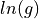
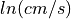

3.4. Products and Formats¶
ShakeMap is fundamentally a geographic product, providing a spatial representation of the potentially very complex shaking field associated with an earthquake. Because of its complicated nature, we are required to generate numerous maps that portray various aspects of the shaking that are customized for specific uses or audiences. For some uses, it is not the maps themselves but the components that make up the ShakeMaps that are of interest in order to re-create or customize the maps or user-specific products. In this section, we further describe these ShakeMap component products and the variety of maps and formats.
3.4.1. Accessing ShakeMap Products¶
For each earthquake, all maps and associated products for that event are available via the “Downloads” link on each earthquake-specific ShakeMap webpage. For more systematics uses of ShakeMap products, use the USGS Comprehensive Catalog (ComCat) Earthquake database.
3.4.1.1. Interactive Searches for ShakeMap Products¶
Interactive searches for ShakeMap products is easily accomplished by searching ComCat. Be sure to select “ShakeMap” as the “Product Type” from the “Advanced Options” dropdown menu. One can set spatial, temporal, magntidue and other thresholds for any search. In addition, one can select ShakeMap intensity ranges using the “Impact” dropdown menu. Also see section ShakeMap Archives.
3.4.1.2. Scripted, automated, or command line access ShakeMap products¶
Scripted or command line access to multiple events or specific product, specific versions, sources, regions, time windows, etc., is best accomplished by employing Python tools build with the NEIC’s libcomcat. In particular, users are encouraged to use getproduct, which relies on libcomcat to allow simple or complex queries for any ComCat products and formats.
For example, to download all of the versions of, say, the raster.zip (or shapefiles) files by running this command on a Mac or Linux system:
getproduct shakemap raster.zip -i us1000chhc --get-version all -o ~/tmp/taiwan/
3.4.2. Output Files and Products¶
The available ShakeMap products include (and each is described in more detail in the sections that follow):
- All-inclusive output file
HDF file containing input parameters and data, output grids, and metadata.
- Metadata and runtime information
JSON file of processing and constraints parameters, input data, output paramaters, timestamps, and versioning.
GeoJSON station file containing seismic stations, DYFI observations, predictions, converted parameters (e.g., MMI to PGM, or PGM to MMI).
- Static maps and plots (images in PDF and JPEG formats)
Macroseismic Intensity.
Peak Ground Acceleration (PGA), Peak Ground Velocity (PGV), and Pseudo-Spectral Acceleration (PSA) (when appropriate).
Regression (GMPE) plots with data.
MMI legend file appropriate for the selected GMICE.
Stylized thumbnail of MMI (png).
- Interactive maps
GeoJSON coverage files at low, medium, and high resolution.
PNG overlay file, with accompanying “world file” (.pngw).
GeoJSON file of the finite rupture geometry (if any).
- Grids of interpolated ground shaking
XML grid of ground motions
XML grid of ground-motion uncertainty
- GIS files
GIS Shapefiles in a zip archive (suitable for importing into HAZUS-MH®).
ESRI Raster Grid Files in a zip archive.
Google Earth KMZ file containing various ground-motion layers, station information, and other parameters.
Contour Files in GeoJSON format (unlike the shapefile polygons, contours have been smoothed.)
3.4.3. About the HDF5 File Format¶
HDF5 files are an efficient and flexible way to store large sets of structured data. HDF stands for Hierarchical Data Format and is an open-source project. The data model consists of two types of objects: groups and datasets. Groups may contain datasets or other groups (along with associated metadata). Datasets may contain multidimensional arrays of data (along with accompanying metadata). Groups may be thought of as directories or folders, and datasets as files. The metadata associated with each object allows HDF5 files to be self describing. Data is stored in compressed binary, making the files smaller and more efficient to read and write than text-based formats (such as XML). For almost all uses a user will access the file through an API (bindings are available for many languages), making the details of file structure and layout not relevant.
For more information on HDF5 see the HDF5 support page. The Python interface, h5py, is documented on the h5py web site.
For ShakeMap, the two main data files (shake_data.hdf and shake_result.hdf) are accessed through the methods of the shakelib classes ShakeMapInputContainer and ShakeMapOutputContainer. For documentation see the shakelib container module.
3.4.3.1. shake_data.hdf¶
shake_data.hdf is the input to the model module. It is built by bringing together the various ShakeMap configuration files (found in both the current profile’s install/config path, and in the event’s current directory. It also aggregates information from the event’s rupture file (if one exists), event.xml, and the data files – all found in the event’s current directory. shake_data.hdf is usually created with the assemble module (and possibly modified by augment).
It is generally not necessary for operators to access this file other than through the interfaces of assemble and augment. For developers, the file is accessed through the shakelib ShakeMapInputContainer interface.
3.4.3.2. shake_result.hdf¶
The primary output product of the model module is the HDF5 file shake_result.hdf. There are some differences depending on whether model produces output grids or lists of points. HDF5 files consist of Groups or DataSets. Groups can contain other groups or datasets, and can contain a dictionary-like set of attributes. Datasets consist of arrays holding data values, and metadata in the form of attributes. A very good introduction to the HDF5 data format can be found here.
shake_result.hdf consists of a number of groups and datasets. Our implementation of HDF5 uses groups to contain Python dictionaries, strings, and numpy arrays. Dictionaries are stored as JSON strings. For example, a Python config dictionary consisting of the following information:
d = {
'name': 'config',
'gmpe_set': {
'Active_Crustal': 'Campbell2003'
},
'depth': 34.0,
}
would be stored as a JSON string in a dataset called config,
under a group called dictionaries. In languages that support
JSON, these strings can be easily converted into a data
structure. Developers can access these properties using the
ShakeMapInputContainer interface.
shake_result.hdf contains the following metadata elements:
Name |
Location |
Python Type |
Contents |
|---|---|---|---|
config |
/dictionaries/config |
JSON string |
ShakeMap configuration |
info.json |
/dictionaries/info.json |
JSON string |
ShakeMap metadata |
stations_dict |
/dictionaries/stations_dict |
JSON string |
Dictionary representation of observed data |
rupture |
/dictionaries/rupture |
JSON string |
Dictionary representation of fault rupture |
It also will contain a number of arrays, which, when read with the HDFContainer getGrid() method, return a Grid2D object which is a Python representation of a North-up 2D array of data, whose upper-left corner coordinate and cell dimensions are known. The definition of this object can be found here.
Sampling of grids contained in the HDF:
Name |
Location |
Python Type |
Contents |
|---|---|---|---|
vs30 |
/arrays/vs30 |
Grid2D |
Vs30 values at output grid/points |
distance_rhypo |
/arrays/distances/rhypo |
Grid2D |
Hypocentral distance |
distance_repi |
/arrays/distances/repi |
Grid2D |
Epicentral distance |
distance_rjb |
/arrays/distances/rjb |
Grid2D |
RJB distance |
distance_rjb_std |
/arrays/distances/rjb_std |
Grid2D |
Standard deviation of the RJB distance if the point-source approximations are used, or will be zero if a finite fault is used. |
distance_rrup |
/arrays/distances/rrup |
Grid2D |
Rrup distance |
distance_rrup_std |
/arrays/distances/rrup_std |
Grid2D |
Standard deviation of the Rrup distance if the point-source approximations are used, or will be zero if a finite fault is used. |
distance_rx |
/arrays/distances/rx |
Grid2D |
Rx distance (generalized coordinate used by some GMPEs) |
distance_ry0 |
/arrays/distances/ry0 |
Grid2D |
Ry0 distance (generalized coordinate used by some GMPEs) |
Each IMT dataset (MMI, PGA, etc.) is stored as a group containing two
datasets: the mean values for each cell and the standard deviations.
MMI data for the component ‘Larger’ will be stored under a group called
imts/MMI_GREATER_OF_TWO_HORIZONTAL. The mean array will be stored as
mean, and the standard deviation array will be stored as
std. All IMT grid datasets will be accompanied by a dictionary of
attributes:
Attr name |
Contents |
|---|---|
units |
Physical units of IMT or standard deviation. |
digits |
Number of significant digits to use for the values. |
xmin |
The eastern boundary of the grid (degrees longitude) |
xmax |
The eastern boundary of the grid (degrees longitude) |
ymin |
The southern boundary of the grid (degrees latitude) |
ymax |
The northern boundary of the grid (degrees latitude) |
nx |
The number of grid points in the x dimension |
ny |
The number of grid points in the y dimension |
dx |
The grid interval in the x dimension |
dy |
The grid interval in the y dimension |
Sampling of IMTs in the HDF file:
Name |
Location |
Python Type |
Contents |
|
|---|---|---|---|---|
MMI Mean |
/arrays/imts/GREATER_OF_TWO_HORIZONTAL/MMI/mean |
Grid2D |
MMI Mean Values |
|
MMI Std |
/arrays/imts/GREATER_OF_TWO_HORIZONTAL/MMI/std |
Grid2D |
MMI Std |
|
Sa(0.3) Mean |
/arrays/imts/GREATER_OF_TWO_HORIZONTAL/SA(0.3)/mean |
Grid2D |
SA(0.3) Mean Values |
|
Sa(0.3) Std |
/arrays/imts/GREATER_OF_TWO_HORIZONTAL/SA(0.3)/std |
Grid2D |
SA(0.3) Std |
|
For datasets that are lists of points, the storage of IMTS is the same
as for grids, except that the data are stored as one-dimensional arrays.
Each IMT group wll also contains datasets lons, lats,
and ids, which provide the coordinates of the points in longitude
and latitude, and their IDs, respectively. For sets of points the metadata
attributes are:
Attr name |
Contents |
|---|---|
units |
Physical units of the IMT |
digits |
Number of significant digits to use for the values |
All shake_result.hdf files will have a group in the dictionaries
group called file_data_type
which will have a single attribute data_type that will be one of
‘points’ or ‘grid’. This way the user can distinguish between the two
types of storage.
For grid files, there will also be sets of approximated attenuation
curves stored as one-dimensional arrays. These
will be labeled like /arrays/attenuation/<site>/<IMT>/<type>
Where <IMT> will be one of the output IMTs (e.g., SA(3.0)),
<site> will be one of rock or soil (for which rock
means a Vs30 of 760 m/s, and soil means a Vs30 of 180 m/s), and
<type> is one of mean (for the mean values) or std (for
the standard deviations). All units are in natural log space (except
for MMI). There will also be a set of datasets named like
/arrays/attenuation/distances/<type> which will contain the distances
(in km) corresponding to the points in the data arrays. The type will
be repi, rhypo, rjb, rrup (for epicentral, hypocentral,
Joyner-Boore, and rupture distance, respectively). As with the other
distance arrays, rjb and rrup will be approximated if a finite
rupture model is not supplied in the input.
Dictionary datasets are stored as JSON strings.
There will typically be multiple IMT (Intensity Measure Type) datasets (each containing the mean and standard deviation of the IMT). For instance ‘PGA’, ‘PGV’, ‘MMI’, and various ‘SA(#num)’ [where #num is the period as a floating point number; e.g., ‘SA(1.0)’].
Python developers will likely want to access shake_result.hdf through
the ShakeMapOutputContainer class which may be found in the repository:
https://github.com/usgs/earthquake-impact-utils and imported from
impactutils.utils.io.smcontainers.
Also see, for example, the contour module [shakemap.coremods.contour()]
for some basic access patterns.
3.4.4. Metadata and Runtime Information¶
3.4.4.1. Supplemental Information¶
The file info.json provides an aggregation of important earthquake-specific ShakeMap information and processing metadata. This supplemental information provides a machine-readable (JSON) rundown of many important ShakeMap processing parameters. It includes information about the data and fault input files; the source mechanism; the GMPEs, IPE, and GMICE selected; the type and source of the site amplifications; the map boundaries; and important output information, including the bias and maximum amplitude for each parameter. info.json is critical for understanding or replicating any particular ShakeMap.
Note
Timestamps, versions of the ShakeMap software employed, event-specific parameters, and the version of the specific ShakeMap run are documented in the supplemental information provided in the info.json file.
3.4.4.2. Stationlist GeoJSON¶
The stationlist.json file is a GeoJSON file describing the seismic station and macroseismic data that comprised the input to the ShakeMap. It is contained within shake_result.hdf and may be extracted into the products directory with the stations module. In addition to the input station data, the file will contain predicted values and uncertainties for the station location from the selected GMPE, as well as the computed bias. The file also contains distance metrics, and amplitudes converted from PGM to MMI or from MMI to PGM.
To distinguish between seismic and macroseismic “stations”, each station feature has, within its properties section, and attribute station_type. The possible values are seismic (for seismic instruments) and macroseismic (for “Did You Feel It?” or other macroseismic observations.
The file consists of a list of “features,” each representing one seismic station or macroseismic observation. A typical seismic station feature will have a structure like this:
{
"type": "Feature",
"id": "NC.J051",
"geometry": {
"coordinates": [
-122.007835,
37.312901
],
"type": "Point"
},
"properties": {
"network": "NC",
"intensity_flag": "",
"mmi_from_pgm": [
{
"name": "sa(3.0)",
"sigma": 0.89,
"flag": "0",
"value": 3.75
},
{
"name": "sa(1.0)",
"sigma": 0.75,
"flag": "0",
"value": 3.62
},
{
"name": "sa(0.3)",
"sigma": 0.82,
"flag": "0",
"value": 3.19
},
{
"name": "pgv",
"sigma": 0.63,
"flag": "0",
"value": 3.43
},
{
"name": "pga",
"sigma": 0.66,
"flag": "0",
"value": 2.95
}
],
"distance": 104.211,
"commType": "UNK",
"intensity": 3.4,
"pgv": 0.7679,
"source": "NC",
"instrumentType": "OBSERVED",
"station_type": "seismic",
"code": "NC.J051",
"name": "So Tantau Av Cupertino",
"pga": 0.4807,
"intensity_stddev": 0.63,
"distances": {
"ry0": 103.951,
"rrup": 104.211,
"rjb": 104.208,
"rx": 9.298,
"rhypo": 104.433
},
"location": "",
"channels": [
{
"amplitudes": [
{
"flag": "0",
"units": "cm/s",
"ln_sigma": 0,
"name": "pgv",
"value": 0.7679
},
{
"flag": "0",
"units": "%g",
"ln_sigma": 0,
"name": "sa(3.0)",
"value": 0.2444
},
{
"flag": "0",
"units": "%g",
"ln_sigma": 0,
"name": "sa(1.0)",
"value": 1.1346
},
{
"flag": "0",
"units": "%g",
"ln_sigma": 0,
"name": "pga",
"value": 0.4807
},
{
"flag": "0",
"units": "%g",
"ln_sigma": 0,
"name": "sa(0.3)",
"value": 1.1309
}
],
"name": "01.HNE"
},
{
"amplitudes": [
{
"flag": "0",
"units": "cm/s",
"ln_sigma": 0,
"name": "pgv",
"value": 0.329
},
{
"flag": "0",
"units": "%g",
"ln_sigma": 0,
"name": "sa(3.0)",
"value": 0.2168
},
{
"flag": "0",
"units": "%g",
"ln_sigma": 0,
"name": "sa(1.0)",
"value": 0.5174
},
{
"flag": "0",
"units": "%g",
"ln_sigma": 0,
"name": "pga",
"value": 0.2743
},
{
"flag": "0",
"units": "%g",
"ln_sigma": 0,
"name": "sa(0.3)",
"value": 0.8392
}
],
"name": "01.HNZ"
},
{
"amplitudes": [
{
"flag": "0",
"units": "cm/s",
"ln_sigma": 0,
"name": "pgv",
"value": 0.5312
},
{
"flag": "0",
"units": "%g",
"ln_sigma": 0,
"name": "sa(3.0)",
"value": 0.2124
},
{
"flag": "0",
"units": "%g",
"ln_sigma": 0,
"name": "sa(1.0)",
"value": 0.7154
},
{
"flag": "0",
"units": "%g",
"ln_sigma": 0,
"name": "pga",
"value": 0.4429
},
{
"flag": "0",
"units": "%g",
"ln_sigma": 0,
"name": "sa(0.3)",
"value": 1.1233
}
],
"name": "01.HNN"
}
],
"predictions": [
{
"units": "cm/s",
"ln_sigma": 0.6356,
"name": "pgv",
"ln_phi": 0.5363,
"value": 0.8747,
"ln_bias": -0.1347,
"ln_tau": 0.3412
},
{
"units": "%g",
"ln_sigma": 0.7032,
"name": "pga",
"ln_phi": 0.5689,
"value": 1.186,
"ln_bias": -0.7021,
"ln_tau": 0.4134
},
{
"units": "%g",
"ln_sigma": 0.7337,
"name": "sa(3.0)",
"ln_phi": 0.6198,
"value": 0.1489,
"ln_bias": 0.4019,
"ln_tau": 0.3927
},
{
"units": "%g",
"ln_sigma": 0.786,
"name": "sa(0.3)",
"ln_phi": 0.6556,
"value": 2.3163,
"ln_bias": -0.6296,
"ln_tau": 0.4335
},
{
"units": "%g",
"ln_sigma": 0.7627,
"name": "sa(1.0)",
"ln_phi": 0.6539,
"value": 0.7873,
"ln_bias": -0.0214,
"ln_tau": 0.3925
},
{
"tau": 0.2178,
"phi": 0.717,
"units": "intensity",
"bias": -0.1209,
"name": "mmi",
"value": 3.5145,
"sigma": 0.7494
}
]
}
}
The following features should be noted:
The coordinates are given in longitude, latitude order.
The units of the observed and predicted IMTs are provided; typically percent-g for accelerations and cm/s for velocity. The units of standard deviation and bias are in natural log units.
ln_tau is the logarithm of the between-even standard deviarion, ln_phi is the logarithm of the within-even standard deviation, and ln_sigma is the logarithm of the total standard deviation.
Standard deviations for MMI are linear and omit the ‘ln_’ prefix.
If the flag attribute is “0” or the empty string, the amplitude is considered unflagged; any other value means the amplitude is flagged and therefore not included in the processing.
The generic distance property is the same as rrup the rupture distance.
The generic intensity property is the macroseismic intensity from the best available IMT.
The mmi_from_pgm section contains the macroseismic intensity computed from the available IMTs (to the extent that the chosen GMICE is able to convert them).
Floating point or integer values that cannot or were not determined will have the string value ‘null’.
A typical macroseismic “station” feature will have the following structure:
{
"id": "DYFI.87",
"type": "Feature",
"geometry": {
"type": "Point",
"coordinates": [
-122.6963,
38.4474
]
},
"properties": {
"intensity": 4.8,
"predictions": [
{
"units": "intensity",
"name": "mmi",
"sigma": 1.0851,
"value": 5.1036,
"phi": 0.9733,
"tau": 0.4796,
"bias": -0.4463
},
{
"name": "sa(0.3)",
"ln_bias": -0.1675,
"value": 18.2415,
"ln_sigma": 0.7003,
"ln_tau": 0.3563,
"ln_phi": 0.6029,
"units": "%g"
},
{
"name": "sa(1.0)",
"ln_bias": -0.0512,
"value": 6.0597,
"ln_sigma": 0.7585,
"ln_tau": 0.389,
"ln_phi": 0.6511,
"units": "%g"
},
{
"name": "sa(3.0)",
"ln_bias": -0.0083,
"value": 1.0917,
"ln_sigma": 0.7376,
"ln_tau": 0.3964,
"ln_phi": 0.622,
"units": "%g"
},
{
"name": "pgv",
"ln_bias": -0.0068,
"value": 5.721,
"ln_sigma": 0.6437,
"ln_tau": 0.3495,
"ln_phi": 0.5406,
"units": "cm/s"
},
{
"name": "pga",
"ln_bias": 0.0897,
"value": 7.5028,
"ln_sigma": 0.6602,
"ln_tau": 0.3775,
"ln_phi": 0.5416,
"units": "%g"
}
],
"distance": 35.27,
"pgv": 4.5832,
"pga": 6.8063,
"pgm_from_mmi": [
{
"value": 1.0441,
"flag": "0",
"ln_sigma": 1.4737,
"name": "sa(3.0)",
"units": "%g"
},
{
"value": 4.7097,
"flag": "0",
"ln_sigma": 1.0822,
"name": "sa(1.0)",
"units": "%g"
},
{
"value": 4.5832,
"flag": "0",
"ln_sigma": 0.875,
"name": "pgv",
"units": "cm/s"
},
{
"value": 6.8063,
"flag": "0",
"ln_sigma": 0.8059,
"name": "pga",
"units": "%g"
},
{
"value": 14.9458,
"flag": "0",
"ln_sigma": 1.0131,
"name": "sa(0.3)",
"units": "%g"
}
],
"channels": [
{
"amplitudes": [
{
"value": 4.8,
"name": "mmi",
"flag": "0",
"sigma": 0,
"units": "intensity"
}
],
"name": "mmi"
}
],
"intensity_stddev": 0.3,
"name": "UTM:(10S 0526 4255 1000)",
"instrumentType": "OBSERVED",
"commType": "UNK",
"location": "",
"distances": {
"rrup": 35.27,
"ry0": 20.571,
"rjb": 35.219,
"rx": -28.528,
"rhypo": 43.728
},
"network": "DYFI",
"intensity_flag": "",
"station_type": "macroseismic",
"code": "87",
"source": "DYFI"
}
}
The attributes of the macroseismic station are similar to those of the seismic station (above), except:
There will typically be only a single channel with a single amplitude element.
The pgm_from_mmi section contains the output IMTs derived from MMI (to the extent that the GMICE will make those conversions).
Small intensity values (i.e., those less than 4.0) are not converted to PGM (i.e., they will have the value ‘null’).
The station list JSON file is rendered by the online web pages. See Figure 1 for an example.

3.4.5. Static Maps and Plots (Images)¶
ShakeMap generates a number of static ground-motion maps and plots for various parameters (intensity measures, or IMs). Most of these maps are available in JPEG format, as well as PDF files that—as vector-based images—are suitable for scaling or editing. These maps are typically generated automatically, limiting the format, extent, and features that can be depicted. Nonetheless, these static maps are ShakeMap’s signature products and serve as maps of record and for other purposes, as described below. Static maps can be accessed and selected using tabs along the top of the USGS earthquake event page, as shown in the example in Figure 2.

Figure 2: Event page ShakeMap view for the 2014 M6.0 American Canyon (Napa Valley), CA earthquake. The static instrumental intensity map is shown. Tabs above the map allow access and comparison of different intensity measures (IMs), as well as the uncertainty map and station list.¶
3.4.5.1. Intensity Maps¶
Intensity images—typically of Modified Mercalli Intensity (MMI), but potentially other intensity measures—are the most familiar ShakeMap products. The main intensity map consists of a colored overlay of intensity with the epicenter (and the causative fault, if supplied) prominently marked, (usually) overlain upon the region’s topography, with other cultural and geologic features (cities, roads, and active faults) plotted, depending on the configuration of the ShakeMap system. A detailed scale of intensity is also provided as described in detail in the Technical Guide.
Note
ShakeMap Symbology. It is a recent ShakeMap convention to depict seismic stations as triangles and intensity observations as circles (for cities) or squares (for geocoded boxes). On intensity maps, symbols are unfilled so that the underlying intensity values are visible. On peak ground motion maps, observations are (optionally) color coded to their amplitude according to the legend shown below each map. The epicenter is indicated with a star, and for larger earthquakes, the surface projection of the causative fault is shown with black lines.
Strong motion and intensity data symbols default to “see-through” (unfilled) mode for the intensity map shown in Figure 3 and are color-filled for peak ground motion maps (Figure 4). ShakeMap operators may chose to modify these defaults using alternative mapping configurations.

Figure 3: Intensity ShakeMap from the 2014 M6.0 American Canyon (Napa Valley), CA earthquake. Strong-motion data (triangles) and intensity data (circles) default to “see-through” mode for the intensity map. The north-south black line indicates the fault location, and the epicenter is a black star. The intensity color-coding either as observed (for macroseismic data) or as converted is derived from the conversion equations of Worden et al. (2012) as shown in the legend. Note: Map Version Number reflects separate offline processing for this Manual.¶

Figure 4: Peak acceleration ShakeMap from the 2014 M6.0 American Canyon (Napa Valley), CA earthquake. Strong-motion data (triangles) and intensity data (circles) are color-coded according to their intensity value, either as observed (for macroseismic data) or as converted by Worden et al. (2012) as shown in the legend. The north-south black line indicates the fault location, which nucleated near the epicenter (black star). Note: Map Version Number reflects separate offline processing for this Manual.¶
3.4.5.2. Peak Ground Motion Maps¶
ShakeMap generates static maps for PGA, PGV, and Intensity, and optionally, three separate maps for PSA (commonly at 0.3, 1.0, and 3.0 sec). The PGM maps are distinct from the intensity maps: shaking values on the former are colored image overlays; the latter are PGM contours. On PGM maps, stations’ fill colors indicate the ground motion of the station converted to intensity. The ground-motion values are converted to the intensity color scheme via the selected ground-motion–intensity conversion equation (GMICE), and the corresponding color scale bar is provided at the bottom of the map (see example in Figure 4).
3.4.5.3. Interactive Maps¶
Although the static ShakeMaps are useful, many of these products are more suitably served as interactive maps which can be dynamically scaled (zoomed) and layered upon with user-selected background and other overlays. The layers are provided via GeoJSON, KML, GIS, Raster, and other formats. The USGS Earthquake Program Web pages employ Leaflet, an open-source JavaScript library that is suitable for mobile-friendly interactive maps (see, for example, Figure 5). Many of the interactive features are geared towards balancing the experience for both desktop and mobile visitors (Figure 6). Since the interactive maps are zoomable, it is convenient to select individual stations to query station information and amplitudes (see the example in Figure 7). The interactive map also allows users to select and show/hide specific layers, including seismic stations and DYFI geocoded intensity stations (Figure 8).

Figure 5: Interactive ShakeMap for the 2014 M6.0 American Canyon, CA earthquake. Contours indicate intensities; strong motion data (triangles) and intensity data (circles) are color-coded according to their intensity value, either as observed (for macroseismic data) or as converted by Worden et al. (2012).¶

Figure 6: Mobile view of the interactive ShakeMap for the 2014 M6.0 American Canyon, CA earthquake. Contours indicate intensities; strong motion data (triangles) are color-coded according to their intensity value.¶

Figure 7: Interactive ShakeMap for the 2014 M6.0 American Canyon, CA earthquake showing station information pop-up.¶

Figure 8: Interactive ShakeMap for the 2014 M6.0 American Canyon, CA earthquake. On the interactive map, reported (DYFI) intensities are geocoded and represented with squares depicting the 1km grid area they occupy. Reported Intensities are color-coded according to their intensity value, either as observed or as converted by Wald et al. (1999b).¶
The interactive maps may be accessed by clicking on the static ShakeMaps on the USGS event pages (e.g., http://earthquake.usgs.gov/earthquakes/eventpage/us10003zgz#impact_shakemap).
Note
Currently, interactive maps only portray contours of intensity. Other contours can be downloaded for users’ programs, or overlain with the GIS or KML formats provided with each ShakeMap.
3.4.5.4. Regression (GMPE and Distance Attenuation) Plots¶
ShakeMap regression plots are best visualized interactively online. Each ShakeMap page has an “Analysis” tab that allows comparison of any intensity measure against all data (both seismic and macroseismic) on the map, and users can select the IM, residual views, log or linear scales, different choices of distance measures (Rrup, hypocentral, Rjb), and either rock or soil site conditions. See Figure 9.
If the GMM prediction curve is missing, it is likely that the RSN producing the ShakeMap is running an older version of ShakeMap than V4.0.

Figure 9: Interactive data and prediction curve found under the Analysis tab of the ShakeMap page for an event.¶
ShakeMap also produces static graphs of the observational data plotted with the biased and unbiased GMPE. For example, Figure 10 shows the 1994 M6.7 Northridge earthquake MMI data, and Figure 11 shows the PGA data and GMPE.

Figure 10: Plot showing the 1994 M6.7 Northridge, CA earthquake MMI data (seismic stations are yellow triangles; DYFI observations are blue circles) plotted with the unbiased (red line) and biased (green line) IPE. The dashed green lines show the biased IPE ±3 standard deviations.¶

Figure 11: Plot showing the 1994 M6.7 Northridge, CA earthquake PGA data (seismic stations are yellow triangles; DYFI observations are blue circles) plotted with the unbiased (red line) and biased (green line) GMPE. The dashed green lines show the biased GMPE ±3 standard deviations.¶
3.4.5.5. Attenuation Curves¶
Also available for interactive plots (especiallly in combination with the stationlist.json file is the file attenuation_curves.json. This file provides a set of GMPE values as a function of distance (and their standard deviations) for soft soil and for rock site conditions. The curves are generated using the GMPE (or GMPE set) that is defined for the ShakeMap run.Also available for interactive plots (especiallly in combination with the stationlist.json file is the file attenuation_curves.json. This file provides a set of GMPE values as a function of distance (and their standard deviations) for soft soil and for rock site conditions. The curves are generated using the GMPE (or GMPE set) that is defined for the ShakeMap run.
The structure of these files is:
::
{
"eventid": "<event_id>",
"gmpe": {
"soil": {
"MMI": {
"mean": [
(list of values)
],
"stddev": [
(list of values)
]
},
"PGA": {
.
.
.
},
(other ground-motion parameters)
},
"rock": {
(as above for "soil")
}
},
"distances": {
"repi": [
(list of epicentral distances to which the ground motions correspond)
],
"rhypo": [
(list of hypocentral distances)
],
"rjb": [
(list of Joyner-Boore distances)
],
"rrup": [
(list of rupture distances)
]
},
"mean_bias": {
"MMI": "(the mean event bias computed for MMI)",
"PGA": "(the mean event bias computed for PGA)",
.
.
.
}
}
The units of MMI are MMI, the units of accelerations and their standard deviations are , and the units for velocity and its standard deviation are .
3.4.5.6. MMI Legend¶
To aid with the production of interactive maps, ShakeMap produces a PNG file (mmi_legend.png) of the intensity legend using the GMICE used in the mapping. Figure 12 is an example.
3.4.5.7. Pin Thumbnail¶
A thumbnail of a stylized ShakeMap MMI map is produced by the mapping process. This PNG file (pin-thumbnail.png) may be used as a placeholder, entry point, part of an index, or as a visual identifier of ShakeMap. Figure 13 is an example.

Figure 13: An example of a Pin Thumbnail image.¶
3.4.6. Interpolated Ground Motion Grids¶
As described in the Technical Guide, the fundamental output product of the ShakeMap processing system is a finely-sampled grid (nominally 1km spacing) of latitude and longitude pairs with associated amplitude values of shaking parameters at each point. These amplitude values are derived by interpolation of a combination of the recorded ground shaking observations and estimated amplitudes, with consideration of site amplification at all interpolated points. The resulting grid of amplitude values provides the basis for generating color-coded intensity contour maps, for further interpolation to infer shaking at selected locations, and for generating GIS-formatted files for further analyses.
3.4.6.1. XML Grid¶
The ShakeMap XML grid file is the basis for nearly all ShakeMap products, as well as for computerized post-processing in systems such as ShakeCast and PAGER [see Related Systems]. The XML grid is available as both plain text (grid.xml) and compressed as a zip file (grid.xml.zip). As XML, the grid is meant to be self-describing; however, we describe the format here for the sake of completeness.
After the XML header, the first line is the shakemap_grid tag:
<shakemap_grid xsi:schemaLocation="http://earthquake.usgs.gov http://earthquake.usgs.gov/eqcenter/shakemap/xml/schemas/shakemap.xsd" event_id="19940117123055" shakemap_id="19940117123055" shakemap_version="2" code_version="3.5.1446" process_timestamp="2015-10-30T20:38:19Z" shakemap_originator="us" map_status="RELEASED" shakemap_event_type="ACTUAL">
Aside from schema information, the shakemap_grid tag provides the following attributes:
event_id: Typically this is a string of numbers and/or letters with or without a network ID prefix (e.g., “us100003ywp”), though in the case of major historic earthquakes, scenarios, or other special cases it may be a descriptive string (for example, we have previously used the 1994 Northridge earthquake as an example, and its event_id is “Northridge”).
shakemap_id: Currently the same as event_id, above.
shakemap_version: The version of this map, incremented each time a map is revised or reprocessed and transferred.
code_version: The version of the ShakeMap software used to make the map.
process_timestamp: The date and time the event was processed.
- shakemap_originator: The network code of the center that produced the
map.
map_status: Currently always the string “RELEASED”, but other strings may be used in the future.
shakemap_event_type: Either “ACTUAL” (for real earthquakes) or “SCENARIO” (for scenarios).
The next tag describes the earthquake source:
<event event_id="Northridge" magnitude="6.7" depth="18" lat="34.213000" lon="-118.535700" event_timestamp="1994-01-17T12:30:55GMT" event_network="ci" event_description="Northridge" />
Most of the attributes are self-explanatory:
event_id: See above.
magnitude: The earthquake magnitude.
depth: The depth (in km) of the earthquake hypocenter.
lat/lon: The latitude and longitude of the earthquake epicenter.
event_timestamp: The date and time of the earthquake.
event_network: The authoritative seismic network in which the earthquake occurred.
event_description: A string containing the earthquake name or a location string (e.g., “13 km SW of Newhall, CA”).
Following the event tag is the grid_specification tag:
<grid_specification lon_min="-119.785700" lat_min="33.379666" lon_max="-117.285700" lat_max="35.046334" nominal_lon_spacing="0.008333" nominal_lat_spacing="0.008333" nlon="301" nlat="201" />
The attributes are:
lon_min/lon_max: The boundaries of the grid in longitude.
lat_min/lat_max: The boundaries of the grid in latitude.
nominal_lon_spacing: The expected grid interval in longitude within the resolution of the numeric format of the output.
nominal_lat_spacing: The expected grid interval in latitude within the resolution of the numeric format of the output.
nlon/nlat: The number of grid points in longitude and latitude. The grid data table will contain nlon times nlat rows.
Following the grid_specification tag will be a set of event-specific uncertainty tags:
<event_specific_uncertainty name="pga" value="0.466260" numsta="598" /> <event_specific_uncertainty name="pgv" value="0.464209" numsta="595" /> <event_specific_uncertainty name="mi" value="0.624327" numsta="598" /> <event_specific_uncertainty name="psa03" value="0.436803" numsta="594" /> <event_specific_uncertainty name="psa10" value="0.534212" numsta="595" /> <event_specific_uncertainty name="psa30" value="0.577897" numsta="594" />
These tags provide the uncertainty for the ground motion parameters (natural log units for all but intensity, which is in linear units) computed as a misfit from the biased GMPE (IPE). This is equivalent to the intra-event uncertainty. The number of stations contributing to each uncertainty is also provided. If the number of stations falls below the minimum required to compute the bias, the uncertainty value will be set to -1.
These lines are followed by a number of grid_field tags:
<grid_field index="1" name="LON" units="dd" /> <grid_field index="2" name="LAT" units="dd" /> <grid_field index="3" name="PGA" units="pctg" /> <grid_field index="4" name="PGV" units="cms" /> <grid_field index="5" name="MMI" units="intensity" /> <grid_field index="6" name="PSA03" units="pctg" /> <grid_field index="7" name="PSA10" units="pctg" /> <grid_field index="8" name="PSA30" units="pctg" /> <grid_field index="9" name="STDPGA" units="ln(pctg)" /> <grid_field index="10" name="URAT" units="" /> <grid_field index="11" name="SVEL" units="ms" />
Each tag specifies a column in the grid table that follows.
- index: The column number where the specified parameter may be found.
The first column is column “1.”
name: Description of the parameter in the given column.
LON: Longitude of the grid location (the “site”).
LAT: Latitude of the site.
PGA: Peak ground acceleration at the site.
PGV: Peak ground velocity.
MMI: Seismic intensity.
PSA03: 0.3 sec pseudo-spectral acceleration.
PSA10: 1.0 sec pseudo-spectral acceleration.
PSA30: 3.0 sec pseudo-spectral acceleration.
STDPGA: The standard error of PGA at the site (in natural log units).
- URAT: The uncertainty ratio. The ratio STDPGA to the nominal standard
error of the GMPE at the site (no units).
SVEL: The 30-meter shear wave velocity (Vs30) at the site.
The measurement units:
dd: Decimal degrees.
pctg: Percent-g (i.e., nominal Earth gravity).
cms: Centimeters per second.
- intensity: Generally Modified Mercalli Intensity, but potentially other
intensity measures.
ms: Meters per second.
ln(pctg): Natural log of percent-g.
ln(cms): Natural log of centimeters per second.
The number of grid_field tags will vary: smaller-magnitude earthquakes may not have the pseudo-spectral acceleration values; scenarios will not have STDPGA or URAT; and maps that have not been site corrected will not have SVEL.
The grid_field tags are followed by the grid_data tag, the gridded data, and the closing tags:
<grid_data> -119.7857 35.0463 4.3 4.21 5.26 5.76 5.76 1.09 0.5 1 800 -119.7774 35.0463 4.34 4.23 5.27 5.8 5.78 1.1 0.5 1 800 -119.7690 35.0463 4.37 4.25 5.27 5.84 5.81 1.1 0.5 1 800 … </grid_data> </shakemap_grid>
The fast index for the coordinates is longitude, the slow index is latitude. Dimensions are from upper left to lower right (i.e., from longitude minimum/latitude maximum to longitude maximum/latitude minimum). The GMT program xyz2grd (coupled with gmtconvert) is particularly useful for converting the grid.xml data into a usable grid file.
3.4.6.2. Uncertainty Grid XML¶
The file uncertainty.xml.zip is a zipped XML file containing the standard errors for each of the ground-motion parameters at each point in the output grid. It has the same structure as grid.xml, with the additional grid_field names:
STDPGA: Standard error of peak ground acceleration.
STDPGV: Standard error of peak ground velocity.
STDMMI: Standard error of seismic intensity.
STDPSA03: Standard error of 0.3 sec pseudo-spectral acceleration.
STDPSA10: Standard error of 1.0 sec pseudo-spectral acceleration.
STDPSA30: Standard error of 3.0 sec pseudo-spectral acceleration.
The standard errors are given in natural log units, except for intensity (linear units). The PSA entries will be available only if the PSA ground motion parameters were mapped. No ground motion data or Vs30 values are available in uncertainty.xml.zip; for those, use grid.xml.zip.
3.4.7. GIS Products¶
ShakeMap GIS Files (zipped) are a collection of shapefiles of polygons of the ShakeMap model outputs for each shaking metric: MMI, PGA, PGV, and PSA at several periods (usually 0.3, 1.0, and 3.0 sec). These file should be easily importable into any GIS system. The ESRI Raster Files (also zipped) are a collection of ESRI-formatted binary files. It should be relatively easy to convert these to (for example) ArcGIS grids using the standard tools provided with the software.
3.4.7.1. Shapefiles¶
The file base names in the shape files are abbreviations of the type of ground-motion parameter:
mi
macroseismic intensity (usually, but not necessarily, mmi)
pga
peak ground acceleration
pgv
peak ground velocity
psa0p3
0.3 s pseudo-spectral acceleration
psa1p0
1.0 s pseudo-spectral acceleration
psa3p0
3.0 s pseudo-spectral acceleration
GIS shapefiles are comprised of seven standard associated GIS files:
.dbf
database file with layer attributes
.shp
the file with geographic coordinates
.shp.xml
contains metadata in XML format
.shx
an index file
.prj
contains projection information
.lyr
contains presentation properties
.cpg
contains the character encoding scheme
In this application, the shape files are contour polygons of the peak ground-motion amplitudes. These contour polygons are actually equal-valued donut-like polygons that sample the contour map at fine enough intervals to accurately represent the surface function. We generate the shapefiles independent of a GIS using the Fiona Python package. Contouring, as well as polygon formation and nesting, is performed by functions written in the C programming language by Bruce Worden, and included in the ShakeMap software distribution.
The contour intervals are 0.04g for PGA and the three PSA parameters, and 2cm/s for PGV. The file also includes MMI contour polygons in intervals of 0.2 intensity units. These shapefiles have the same units as the online ShakeMaps. The archive of files is compressed in zip format and called shape.zip. The shape.zip file is available for all events, but the spectral values are generally only included for earthquakes of magnitude 4.0 and larger.
3.4.7.2. ESRI Raster Files (.flt files)¶
ESRI raster grids of the ground-motion parameters and their uncertainties are also available. The file base names are similar to those of the shape files, with the exception that ‘mi’ in the shape files is ‘mmi’ here.
mmi
macroseismic intensity (usually, but not necessarily, mmi)
pga
peak ground acceleration
pgv
peak ground velocity
psa0p3
0.3 s pseudo-spectral acceleration
psa1p0
1.0 s pseudo-spectral acceleration
psa3p0
3.0 s pseudo-spectral acceleration
The files are found in a zipped archive called raster.zip. Each archive contains four files per parameter: <param>.flt and <param>.hdr, which contain the median ground-motion data and metadata, respectively, and <param>_std.flt and <param>_std.hdr, which contain the uncertainties for the ground motions, and metadata, respectively. As with the other GIS files, PGA, PGV, and MMI are available for all events, while the PSA parameters may only be included for earthquakes M4.5 and larger.
The units (except for MMI, which is expressed in linear units) are the natural logarithm of the physical units: for acceleration that is and for velocity the units are .
3.4.7.3. Google Earth Overlay¶
The file shakemap.kmz enables the user to view the ShakeMap in Google Earth (or other KML-compliant applications). A color-scaled intensity overlay is provided along with a complete station list, contours and polygons of intensity and peak ground motion, a fault representation (if provided), epicenter indicator, intensity scale, and the USGS logo. The transparency of the intensity overlay is adjustable by the user, as is the appearance of seismic stations.
Note that the KMZ file is static and will not automatically update when we update the ShakeMap for an event, so periodic checks for updated maps and reloading of the KMZ is recommended.
In addition to the ShakeMap-produced KMZ file, the USGS produces a KML file (linked near the top of the page in the event-centric pages with the title “Google Earth KML”) which contains not only ShakeMap data, but also data from PAGER, DYFI, and other sources. This file should be the preferred source, as it will have the most-up-to-date links, though it does not have all of the layers available in the ShakeMap KMZ file.
3.4.7.4. Contour Files¶
ShakeMap also generates a set of GeoJSON contour files. These files are named like cont_<param>.json, where “<param>” is replaced with one of the IMTs:
mmi
macroseismic intensity (usually, but not necessarily, mmi)
pga
peak ground acceleration
pgv
peak ground velocity
psa0p3
0.3 s pseudo-spectral acceleration
psa1p0
1.0 s pseudo-spectral acceleration
psa3p0
3.0 s pseudo-spectral acceleration
These contours are readable via a wide range of software, and are used in the generation of the interactive web pages. The units for MMI are MMI, for acceleration they are %g (percent-g), and for velocity they are cm/s.
Note
The GeoJSON contours have been smoothed for usability reasons, and are therefore not suitable for detailed analytics or loss modeling. Users who require more precision are directed to the GIS shape files and ESRI raster grid files described eleswhere in this section.
3.4.7.5. Coverage Files¶
“Coverage” files suitable for the production of interactive maps and plots are available in high-, medium-, and low-resolution versions. The files follow the GeoJSON “.covjson” format described at Overview of the CoverageJSON format.
3.4.8. Real-Time Product Distribution, Automatic Access, and Feeds¶
ShakeMap products are distributed by a number of means immediately after they are produced. The intent of these products is to help responders and other responsible parties effectively manage their post-earthquake activities, so we make it as easy as possible for users with a variety of technological sophistication and infrastructure to access them. The general distribution methods are interactive Web downloads, GeoJSON feeds, ShakeCast, the Product Distribution Layer (PDL) client, and GIS web mapping services.
3.4.8.1. Interactive Web Downloads¶
The easiest way to obtain ShakeMap products immediately following an earthquake is from the ShakeMap or USGS Earthquake Program webpages. The event page for any given earthquake has a download link where all of the products for that event may be found. The ShakeMap page for an event also has a download link that lists just the ShakeMap products. The variety of formats for ShakeMap are described in the previous section.
3.4.8.2. GeoJSON Feeds¶
Automatically Retrieving Earthquake Data and ShakeMap Files. The USGS Earthquake Program GeoJSON feed provides USGS ShakeMap, along with most other USGS real-time earthquake products. GeoJSON is an extension of the JavaScript Object Notation (JSON) standard and allows for a variety of geospatial data structures. There are JSON parsers in most modern languages, including Python, Perl, Matlab, and R.
In order to automatically ingest the above data, use the automated GeoJSON feeds. Mike Hearne (USGS), provides an example python script for querying the USGS Magnitude 2.5+ thirty-day GeoJSON feed, and downloading the most recent version of the event products desired by the user. In addition, the USGS Haz-Dev group provides other scripts in various programming languages that allow access to the GeoJSON feeds. Modifications to these scripts allow access to any ShakeMap (or other) products automatically, GIS flavors included.
Example. How can I use your API to get ShakeMap files download for specific events (that shook Guatemala)?
The following GeoJSON summary query includes events between 2015-01-01 and 2016-01-01 in the bounding box lat. 10 to 20, long. -95 to -85, in case an event outside Guatemala results in shaking inside Guatemala; and includes a ShakeMap product:
http://earthquake.usgs.gov/fdsnws/event/1/query?format=geojson& starttime=2015-01-01T00:00:00&maxlatitude=20&minlatitude=10&maxlongitude=-85& minlongitude=-95&endtime=2016-01-01T00:00:00&producttype=shakemap
The results include an array of features with summary information for each event. The detail property is a URL for the GeoJSON detail feed that includes URLs for ShakeMap files. For example, for the us100044xh event, the GeoJSON detailed feed URL is:
HTTP://earthquake.usgs.gov/fdsnws/event/1/query?eventid=us100044xh&format=geojson
The URLs for the ShakeMap files can be found inside the feed:
FEED.properties.products.shakemap[0].contents['download/grid.xml.zip'].url FEED.properties.products.shakemap[0].contents['download/shape.zip'].url
In this case, these are the specific URLs are for the grid.xml file and for the shape.zip files, respectively:
http://earthquake.usgs.gov/archive/product/shakemap/us100044xh/us/1450404175265/ download/grid.xml.zip http://earthquake.usgs.gov/archive/product/shakemap/us100044xh/us/1450404175265/ download/shape.zip
3.4.8.3. Additional Feeds¶
More information about USGS earthquake data feeds is available at our Feeds & Notifications page.
3.4.8.4. ShakeCast System¶
ShakeCast delivers user-specified ShakeMap products to the user’s local or virtual system(s), and runs fragility-based damage (or inspection priority) calculations for specific portfolios. More advanced features of ShakeCast include a complete suite of damage estimation and mapping tools, coupled with sophisticated tools to notify responsible parties within an organization on a per-facility basis. See Related Systems for more details. Complete background on ShakeCast can be found on the ShakeCast homepage and the documentation provided therein.
3.4.8.5. Product Distribution Layer (PDL) Client¶
Finally, for academic and government users, ShakeMap products (and other earthquake products) are communicated through the USGS’s Product Distribution Layer (PDL).
3.4.8.6. Web Mapping (GIS) Services¶
In addition to the downloadable GIS-formatted ShakeMaps (including shapefiles) that are readily available for each ShakeMap event, USGS also hosts a real-time 30-day Signficant Earthquake GIS ShakeMap Feed. ESRI provides a separate Disaster Response ArcGIS service, providing live feeds to several USGS post-earthquake products.
Export Map Image: Download a static image of the map to include in their work.
Identify: Retrieve service data for given geographic location. (Point, Line, Polygon or Envelop)
Find: Query service data that contains certain attributes. (ex. ShakeMap data for distinct event id)
Query: Query a specific layer in a service and return a detailed featureset.
Along with the common GIS service interactions listed above, there are many other calls that GIS developers can make through the REST API.
Note
Earthquake Significance. The NEIC associates a *significance* number with each earthquake event. Larger numbers indicate more significance. This value is determined by a number of factors, including magnitude, maximum MMI, felt reports, and estimated impact. The significance number ranges from 0 to 1000. The “30 day significant earthquake feed” that determines which events are included in the ShakeMap GIS feed uses events with a significance of 600 and greater.
Accessing ShakeMap GIS Files: While this GIS service only provides access to significant earthquakes that have occurred within the last thirty days, users can download GIS files for significant events on our website after the thirty-day period. The significant earthquake archive has a list of large events with links to each event’s webpage. From the event page, users can click on the ShakeMap tab and navigate to the “Downloads” section to get a zipped bundle of shapefiles.
Acknowledgement: USGS appreciates guidance from the Esri Aggregated Live Feed team, specifically Derrick Burke and Paul Dodd. Their willingness to share best practices for robust real-time sharing of GIS data enabled this project to be completed.

{kind=link}